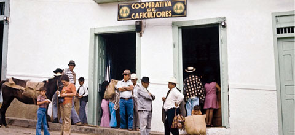
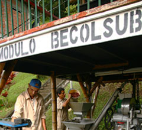
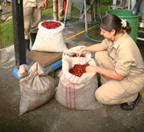

Todos estos aspectos destacados de la gente de la región se han convertido en símbolo y esencia de la caficultura de hoy:
Una actividad con visión empresarial basada en el poder de la asociación, el trabajo familiar y la especialización del cultivo.